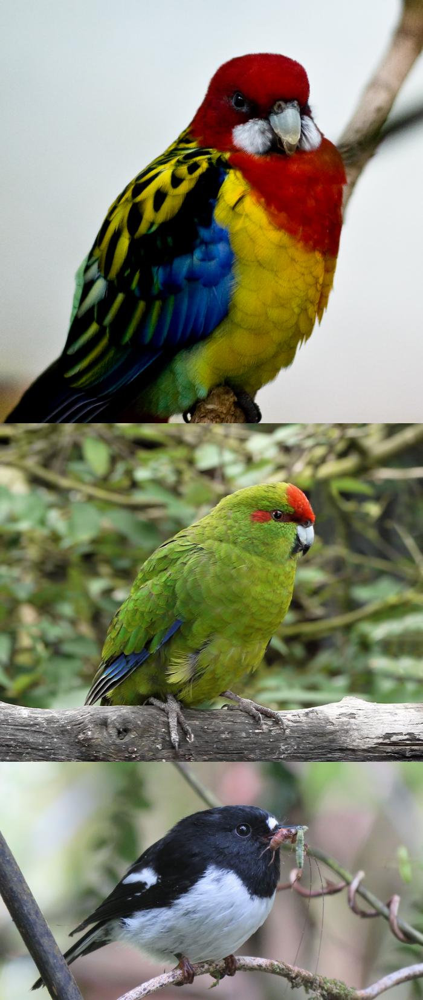

My full Master’s thesis report is available to read here.
The purpose of this project was to explore the viability of using publicly available, ‘citizen science’ data to fit occupancy models. I wanted to provide details and advice for researcher looking to efficiently perform a similar analysis but over a wider area and more species.
Occupancy modelling is popular method for estimating the distribution of species across large geographic areas. Occupancy models were traditionally developed to compute estimates for one species, however, recent formulations do allow for multiple species’ distributions to be fitted in one occupancy model. Citizen science databases and atlas projects, such as eBird and the NZ Bird Atlas, provide large amounts of data that can be used for fitting occupancy models. This data is noisier than that from a formal experimental design, and requires appropriate treatment when used for fitting models.
This project explores the application of both single-species and multi-species occupancy modelling methods to three bird species – the Eastern Rosella (Platycercus eximius), Kākāriki | Red-Crowned Parakeet Cyanoramphus novaezelandiae, and the Miromiro | Tomtit Petroica macrocephala – using citizen science data. The primary purpose is to explore the feasibility of these methods to compute occupancy estimates for multiple species at a time using such data. An additional interest is on whether the presence of the introduced Eastern Rosella affects the occupancy likelihood of the other two native species in an area.